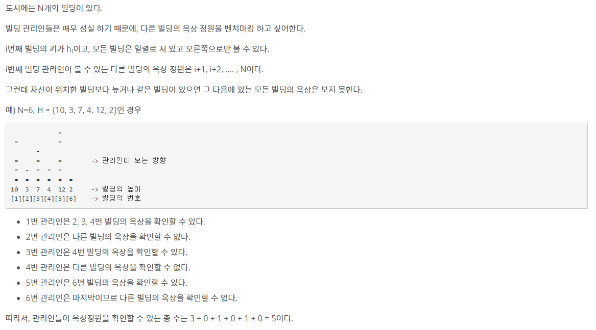
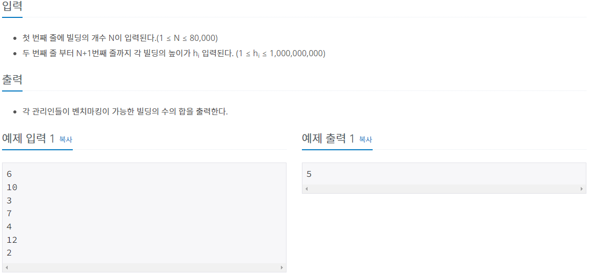
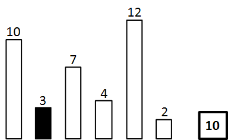
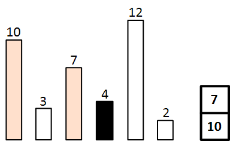

#INFO
난이도 : GOLD5
알고리즘 유형 : STACK
출처 : 6198번: 옥상 정원 꾸미기 (acmicpc.net)
6198번: 옥상 정원 꾸미기
문제 도시에는 N개의 빌딩이 있다. 빌딩 관리인들은 매우 성실 하기 때문에, 다른 빌딩의 옥상 정원을 벤치마킹 하고 싶어한다. i번째 빌딩의 키가 hi이고, 모든 빌딩은 일렬로 서 있고 오른쪽으
www.acmicpc.net
 
#SOLVE
Monotone Stack 개념을 이용하면 쉽게 문제를 풀이할 수 있습니다. Monotone Stack 이란, 뜻 그대로 Monotone(단조로운) Stack(스택) 이라는 의미로 스택을 오름차 혹은 내림차 순으로 유지시키는 방식의 스택입니다.
문제에 Monotone Stack 을 적용시켜 항상 스택을 내림차 순으로 유지 시키면 됩니다. 즉, 스택에 현재 인덱스보다 크기가 큰 스택만을 포함시켜 인덱스가 가리키고 있는 빌딩을 볼 수 있는 빌딩들의 수를 결과값에 더하는 방식으로 풀어 나가면 됩니다.
예를들어 현재 가리키고 있는 인덱스는 3 이라고 가정하면 스택에는 10을 남깁니다. 스택에 남아있는 원소의수 { 10 } 가 2번 째 빌딩 (3) 을 볼 수 있는 빌딩의 개수가 됩니다.

현재 가리키고 있는 인덱스를 4라고 가정하면, 스택에는 10, 7을 남깁니다. 3은 4보다 작기에 스택에 남기면 안됩니다. 스택에 남아있는 원소의 수 { 10, 7 } 이 4번째 빌딩 (4)를 볼 수 있는 빌딩의 개수가 됩니다.

#CODE
#include <iostream>
#include <stack>
#include <vector>
using namespace std;
int main() {
stack<int> stk;
int n;
cin >> n;
vector<int> building(n);
for (int i = 0; i < n ; i++) {
cin >> building[i];
}
long long res = 0;
for (int i = 0 ; i < n ; i++) {
while (!stk.empty() && stk.top() <= building[i]) {
stk.pop();
}
res += stk.size();
stk.push(building[i]);
}
cout << res << endl;
return 0;
}